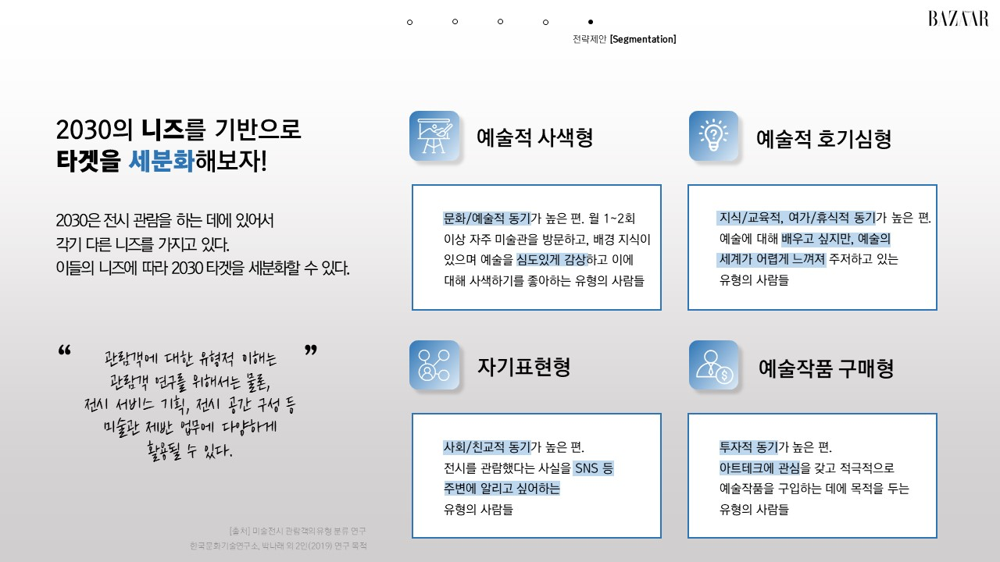
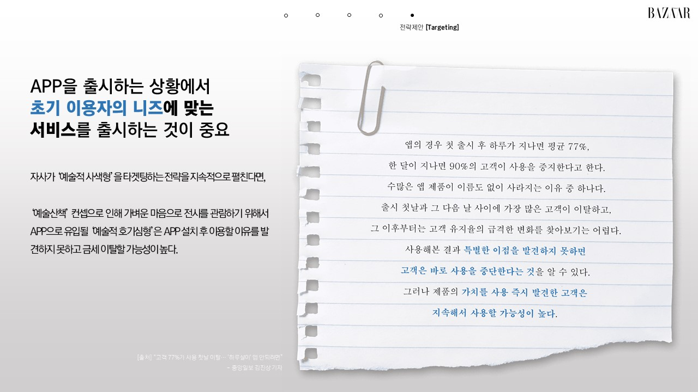
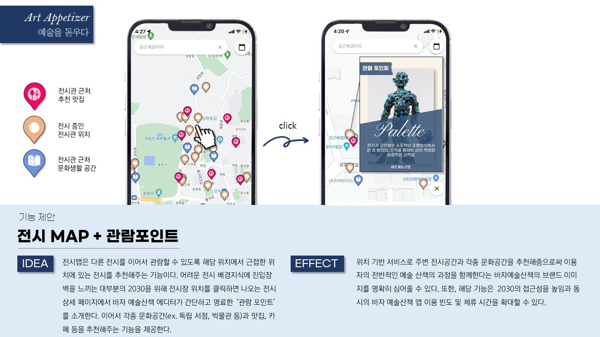
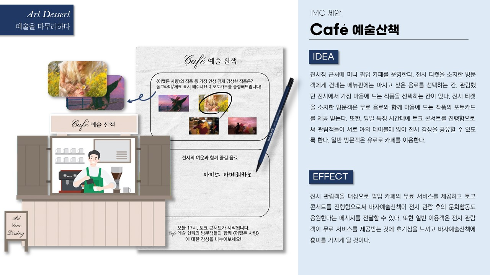

하퍼스바자 경쟁PT 최우수상 🏆
타깃의 행동 맥락을 해석해 감각적인 콘셉트로 만들다





업무 요약
마케팅 학회 연합 내에서 진행된 산학협력 경쟁PT. 패션 매거진 하퍼스바자에서 신규 런칭하는 아트 디지털 APP '바자예술산책' 관련 앱 기능 및 마케팅 전략을 제안
업무 내용 · 전략
[역할]
로직 구체화, 컨셉명 제안 등 기획을 주도, 대부분의 디자인을 담당
[전략]
첫 포지셔닝을 위해선 2030의 니즈를 세분화하여 자사의 정체성과 부합하는 니즈를 가진 타겟층을 초기 이용자로 확보해야 함을 강조
또한 이들이 전시 관람 시 전-중-후 단계적으로 여러움을 겪는 것을 파악하여 코스요리 '파인다이닝' 개념의 컨셉 고안
설문조사, 자체 FGI 등을 통해 타겟의 니즈를 심층 분석하는 것에 중점을 둠
성과 · 결과
"아주 탄탄하고 이해가 잘 된다. 많은 아이디어와 상세한 자료들은 앞으로의 실무에 많은 도움 될 것 같다."
→ 최우수상 수상